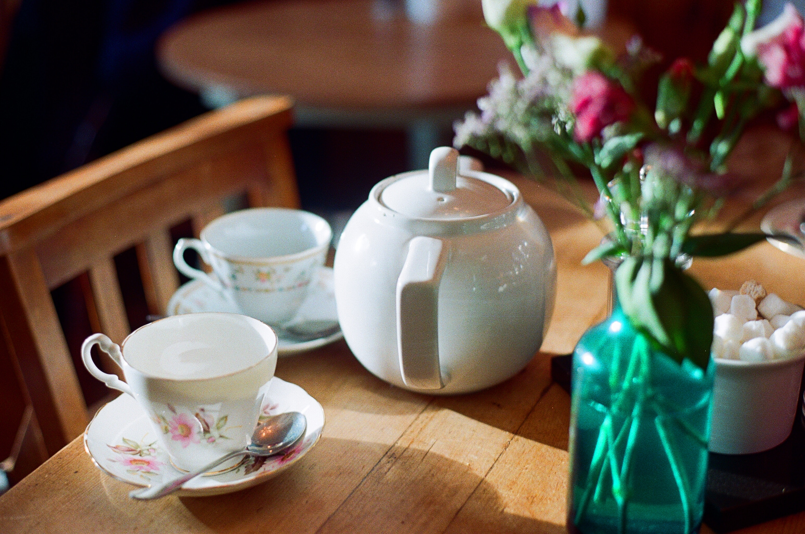
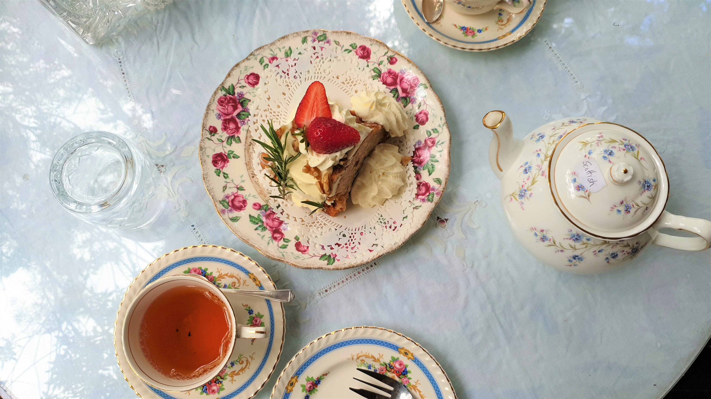

Menu
Tea

-
English Breakfast
A robust and brisk black tea, delivering a bold, malty flavor profile with notes of caramel
$4.00
-
Earl Grey
A classic black tea infused with bergamot oil, Earl Grey has a distinctive citrusy aroma and a bold flavor. It's a favorite among tea drinkers for its aromatic qualities.
$4.00
-
Chamomile
An herbal tea made from dried chamomile flowers, it offers a mild, floral taste and is prized for its calming and soothing properties, often consumed to aid relaxation and sleep.
$4.00
-
Hojicha
A soothing, earthy Japanese green tea with a toasty aroma and a nutty, caramelized taste, crafted from roasted green tea leaves
$4.00
-
Jasmine Pearls
Hand-rolled green tea leaves scented with jasmine flowers, offering a delicate floral aroma and a smooth, subtly sweet taste.
$4.00
-
Bluberry White Tea
White tea infused with sweet blueberries, providing a gentle, fruity flavor and a light, refreshing character
$0.00
-
Masala Chai
A traditional Indian blend of black tea with aromatic spices like cardamom, cinnamon, cloves, and ginger, creating a warm, flavorful, and comforting drink.
$4.00
-
Hibiscus
Made from dried hibiscus flowers, this vibrant red herbal tea has a tart, cranberry-like flavor, and is rich in antioxidants
$4.00
Sweets
-
Vanilla Bean Apricot Scones
Fragrant vanilla beans combined with sweet apricots create a scone that's subtly sweet, aromatic, and simply delightful, making it a great choice for tea time.
$7.00
-
Rosewater Pistachio Cake
Moist and flavorful cake delicately scented with rosewater, adorned with crushed pistachios, and layered with light cream, a floral and nutty delight.
$9.00
-
Honey Lavender Madeleines
Classic madeleines kissed with the floral essence of lavender and glazed with golden honey.
$7.00
-
Earl Grey Shortbread
Buttery shortbread cookies infused with the aromatic essence of Earl Grey tea, finished with a light citrus glaze.
$7.00
-
Chocolate Chai Éclairs
Decadent éclairs filled with spiced chai-infused chocolate pastry cream, topped with a rich ganache.
$8.00
-
Cardamom Pear Scones
These scones combine the warmth of cardamom with the sweetness of ripe pears, offering a fragrant and subtly spiced pastry.
$7.00
Savory Bites
-
Smoked Salmon and Dill Tartlets
Miniature pastry shells filled with smoked salmon, fresh dill, and a dollop of creamy horseradish, delivering a burst of savory flavors.
$10.00
-
Cucumber Ribbon Sandwiches
Thinly sliced cucumbers layered on pillowy soft bread with herbed cream cheese, offering a refreshing and crisp bite.
$7.00
-
Mini Quiches
Individual-sized quiches filled with various savory combinations such as bacon and gruyere, spinach and feta, or mushroom and Swiss cheese.
$8.00
-
Caramelized Onion and Goat Cheese Crostini
Toasted baguette slices topped with sweet caramelized onions and creamy goat cheese, providing a delightful combination of flavors and textures.
$8.00
Accompaniments
-
Clotted Cream & Preserves
Traditional clotted cream served alongside house-made strawberry and rose petal preserves
$5.00
-
Tea Pairing Guide
Enhance your experience with our expertly paired tea recommendations for each course.
Free!
-
Tea-infused Honey
Pure, golden honey infused with tea essence, lending a delicate floral or herbal note. Drizzle over scones or pair with cheese for a delightful taste adventure.
$2.00
-
Lemon Curd
esty and tangy, our house-made lemon curd is the perfect contrast to the sweetness of pastries. Its bright flavor profile adds a refreshing touch to your tea experience.
$2.00